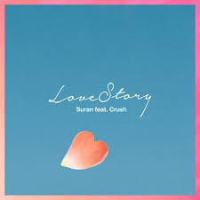
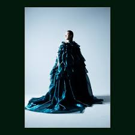

기쁠때는
다비치 - 팡파레
다비치의 '팡파레'는 사랑에 빠진 설렘และ 행복을 화려하게 터지는 팡파레에 비유한 청량하고 경쾌한 곡입니다. 다비치 특유의 파워풀한 보컬과 리드미컬한 멜로디가 어우러져 듣는 이에게 기분 좋은 에너지를 선사하는 대표적인 힐링 송입니다.
슬플때는
정세린 - 마음이 쉬고 싶을 때
자극적인 사운드 없이 오직 맑고 서정적인 피아노 선율로만 채워져 있어, 가만히 듣고 있으면 마음에 쌓인 긴장과 스트레스가 차분히 내려앉는 기분을 선사합니다. 화려한 기교 대신 담담하고 깊이 있게 읊조리는 듯한 연주가 특징입니다.
설렐때는

SURAN - 러브스토리(feat. 크러쉬)
수란 특유의 매력적이고 유니크한 음색과 크러쉬의 감미로운 보컬이 조화를 이루어, 연애를 시작할 때의 간지럽고 행복한 기분을 극대화합니다. 통통 튀면서도 세련된 멜로디 위에 주고받는 듯한 가사가 더해져, 듣는 내내 몽글몽글한 설렘을 선사하는 대표적인 달콤한 고백 송입니다.
화가날때는

선우정아 - 도망가자
미니멀한 피아노 선율로 시작해 후반부로 갈 수록 웅장해지는 스트링 사운드가 감정을 고조시키며, 선우정아 특유의 호소력 짙고 깊은 보컬이 듣는 이의 마음을 거칠게 흔들고 이내 따뜻하게 감싸 안아줍니다.
위로가 필요할 때는
권진아 - 위로
조용히 읊조리듯 시작하는 권진아 특유의 맑고 담담한 음색이 매력적이며, 후반부로 갈수록 고조되는 감정선이 깊은 울림을 줍니다. "오늘 하루가 내겐 너무 길었죠"라는 첫 구절처럼, 세상에 혼자 남겨진 듯한 외로움과 고단한 하루를 보낸 이들에게 말없이 곁을 지켜주는 듯한 따뜻한 가사가 특징입니다.